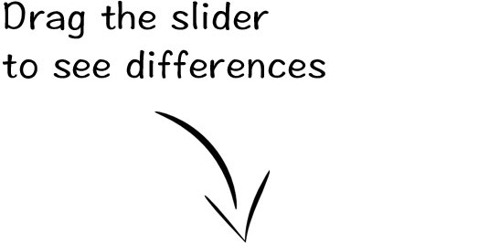
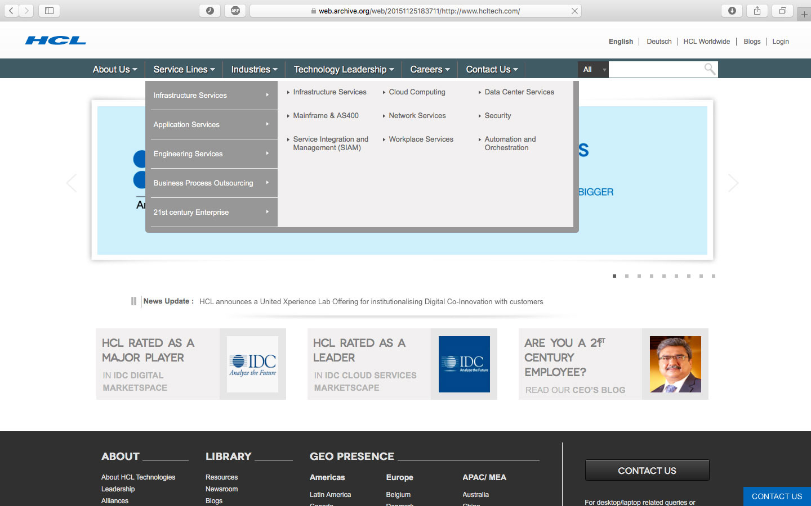
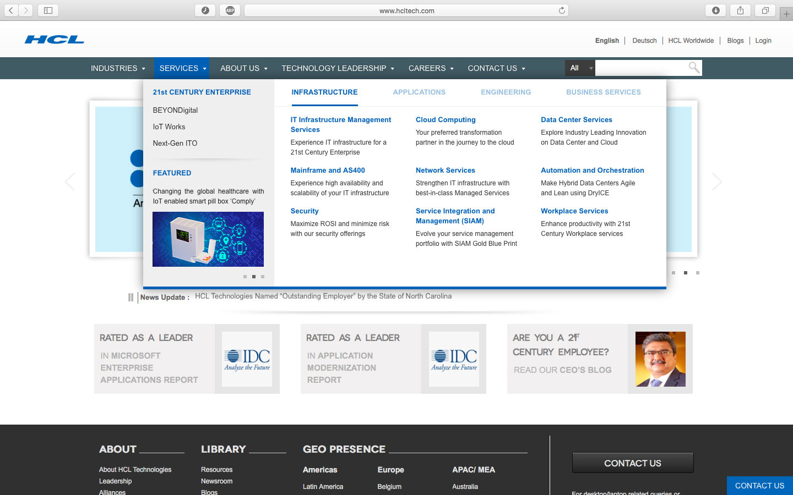

Amazon sports a super interesting menu. Sure the interface is neat, but there’s something more to it. One intrinsic algorithm which is hardly noticed by the users, but it changes the entire user experience. Had it not been there, it is possible that Amazon would see a lesser user engagement, higher bounce off and a slightly lesser revenue.
The hover effects on Amazon's menu are super fast - which is uncommon with any menu which has a listed submenu. Most dropdown menus have to have a little bit of delay before the submenu is opened. Remember, in Windows XP you had to trace your path carefully to the submenu without intersecting the cursor with another menu item, otherwise the submenu closes and you had to start again. Do it without heed and it is an unwinnable game of whack-a-mole - as
Ben Kamens explains it with interesting metaphors.
The trick to keep the menu extremely responsive without making the user deal with frustration is an algorithm which detects the direction of the cursor, invented by
Bruce Tognazzini back in 1986 when he was working on HID for Apple. Intrigued by this, I wrote to him and he replied mentioning his inspiration for the algorithm.
This was my motivation as I deep-dived into menus and revamped the navigation for
HCL Technologies' official website spanning across more than 36,000 pages.



Ethics (And an NDA, for that matter!) won't allow me to provide the exact metrics, however, post the revamp, we observed increase in engagement rates for business oriented items. Here are the specific enhancements incorporated in the new navigation.
-
Search Optimization
The new structure enabled adding a few lines of description under each of the 37 Service Lines items, which means a better user experience and an impactful navigation optimized for search engines.
-
Click Rate Analysis
A click rate inspection for each of the menu items revealed useful data. Important and business oriented were moved up on the list. The rest of the elements were listed based on the order of existing click rate, making it easy for users to jump to the desired pages.
-
Interface Alignment
The new design has a solid white background and HCL brand-blue accent which provides a visible feedback on selection.
-
Experience Improvement
It incorporates minutest JavaScript - making it fundamentally fast and super-light. Most of the animations were eliminated during design to maintain a distraction-free experience on the navigation.
-
Serial Position Effect
One interesting thing that I identified was that the recency effect works even on navigation. That means, items in the starting and end of menu receive a bias of more clicks. It was wise to move the crucial items to these positions.
-
Multilingual Optimization
The content of the entire navigation was professionally translated to provide synchronized experience across multiple languages.
2016. Garvit Gupta. All rights reserved.